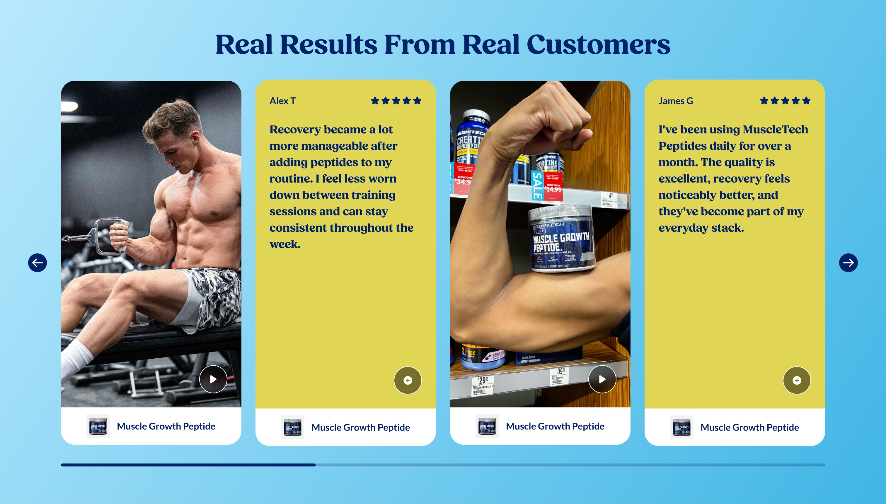
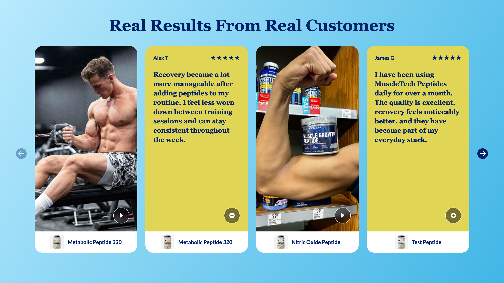
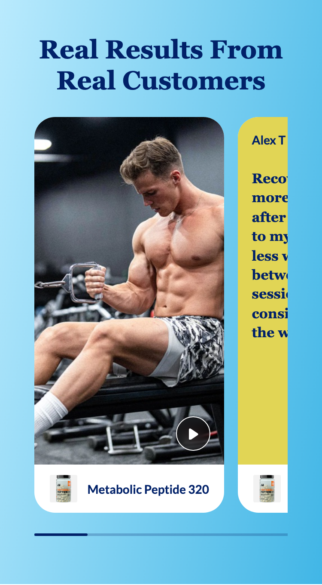
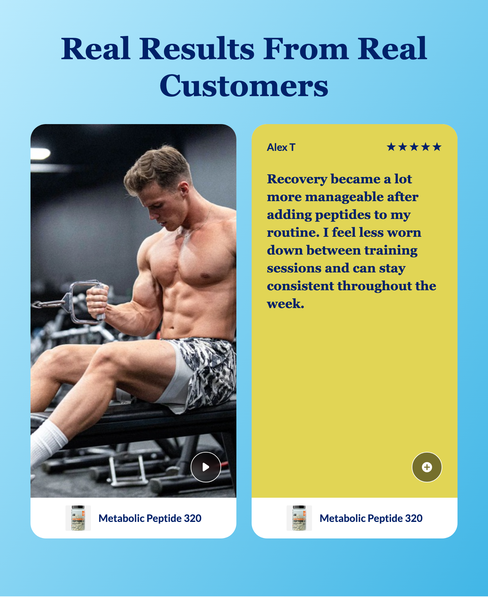
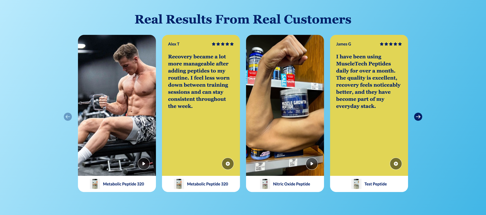

Platter component
Shoppable UGC Module
The client's spec, reproduced verbatim in substance from Confluence page 897220635, authored by Sarah Lee, last updated 2026-08-07. Where our implementation deviates it is recorded under Deviations, not by editing the spec.
Spec: https://getplatter.atlassian.net/wiki/spaces/TVS/pages/897220635/FSD+Shoppable+UGC+Module
02 — Screenshots
How it renders
Wipe the handle across the design to find where the build drifts from it. The Figma frame and the capture are exported at the same width, so anything that moves under the handle is a real difference. Every width is below as a plain capture.





03 — Fields
What a merchandiser fills in
Generated from _schema.ts, in the order Amplience shows them.
| Field | Type | Constraints | Description | |
|---|---|---|---|---|
headingHeading |
string | required | max 90 min 1 |
The headline above the cards, e.g. "Real Results From Real Customers". It is centred at every screen size and wraps to a second line on phones rather than shrinking. Wrap words in _underscores_ for italic and **double asterisks** for bold. Write ~12~ for subscript; a registered mark (®) is raised automatically, and a plain asterisk is never formatting. |
headingLevelHeading level |
string | h1 · h2 · h3default "h2" |
Choose h1 only if this module is the first thing on the page and no other h1 exists. Otherwise leave it as h2 — two h1s on one page hurts SEO. Choose h3 when the module sits underneath a section that already has an h2, so the page's heading order stays unbroken. This changes nothing you can see: the size is set separately below. | |
headingSizeHeading size (desktop / mobile) |
string | 64px / 38px · 56px / 34px · 48px / 30px · 36px / 24px · 28px / 20px · 20px / 16pxdefault "48px / 30px" |
A fixed pair from the TVS type scale — the first size applies from tablet up, the second on phones. | |
headingFontHeading font |
string | Lato · corisanderegular · Fieldsdefault "Fields" |
Fields is the serif this module is designed in and is the default. It is not yet installed on vitaminshoppe.com, so until it is, the heading falls back to Georgia — still a serif, but not the exact drawn face. Pick Lato if you would rather the heading match the rest of the site exactly than approximate the design. | |
bodyDescription |
string | max 220 | An optional sentence between the heading and the cards. The design does not draw one, so leaving it empty is the design; fill it in only when the heading needs support. | |
cardsCards |
array | required | Between three and twelve cards, shown in the order you list them here. Drag a row to reorder it. Four fit a desktop row and one fits a phone, so a fifth card is what turns the row into a slider — below that it is a static row and the arrows do not appear. Each card is either a video or a written quote, and the design alternates the two; nothing forces you to, but a row of four videos loses the contrast the layout is built on. | |
backgroundColorBackground colour (overrides the gradient) |
string | One flat colour behind the whole module, used instead of the design's blue gradient. The heading is navy #012169 and the cards are white, so pick something light. Leave empty to keep the gradient. | ||
backgroundGradientCustom gradient (advanced, overrides both) |
string | max 300 | A CSS gradient, used instead of both the design's gradient and the colour above. Copy the shape of the design's own: linear-gradient(-58deg, #41b6e6 0%, #b9eafd 100%) — an angle, then each colour with the position it reaches. Full syntax and more examples: https://developer.mozilla.org/en-US/docs/Web/CSS/gradient/linear-gradient. The same navy-heading warning applies. A value the browser cannot read is ignored and the design's gradient comes back, so always load the page after saving. Background images are not accepted here. | |
priorityPrioritise image loading |
boolean | default false |
Switch on when this module is the first thing on the page, so the card thumbnails loads immediately instead of lazily. | |
sectionIdSection ID |
string | max 50^[a-z][a-z0-9-]*$ |
A name for this specific module, used for two things. A link anywhere on the site can jump straight to it by ending the URL with # and this name, e.g. #real-results. Page-level CSS can also target this one module rather than every UGC slider. Use lowercase letters, numbers and hyphens, start with a letter, and make it unique on the page — two modules sharing an ID will break the jump link. Leave empty if you need neither. |
04 — Sample content
A filled-in example
From _content.json. This is what the screenshots above are rendering.
{
"heading": "Real Results From Real Customers",
"headingLevel": "h2",
"headingSize": "48px / 30px",
"headingFont": "Fields",
"cards": [
{
"cardType": "video",
"sku": "X2-16692",
"image": "../assets/ugc-demo-gym-620.jpg",
"imageAlt": "A man performing a seated cable row on a bench in a gym",
"video": "https://cdn.shopify.com/videos/c/o/v/ec8b2d17dd4349c1854087a29e52101a.mp4"
},
{
"cardType": "text quote",
"sku": "X2-16692",
"name": "Alex T",
"review": "Recovery became a lot more manageable after adding peptides to my routine. I feel less worn down between training sessions and can stay consistent throughout the week.",
"rating": 5
},
{
"cardType": "video",
"sku": "X2-16694",
"image": "../assets/ugc-demo-shelf-620.jpg",
"imageAlt": "A shopper flexing beside a shelf of BodyTech tubs, holding a Muscle Growth Peptide container",
"video": "https://cdn.shopify.com/videos/c/o/v/ec8b2d17dd4349c1854087a29e52101a.mp4"
},
{
"cardType": "text quote",
"sku": "X2-16693",
"name": "James G",
"review": "I have been using MuscleTech Peptides daily for over a month. The quality is excellent, recovery feels noticeably better, and they have become part of my everyday stack.",
"rating": 5
},
{
"cardType": "video",
"sku": "VS-8531",
"image": "../assets/ugc-demo-gym-620.jpg",
"imageAlt": "A lifter mid-set at a cable machine",
"video": "https://cdn.shopify.com/videos/c/o/v/ec8b2d17dd4349c1854087a29e52101a.mp4"
},
{
"cardType": "text quote",
"sku": "VS-2255",
"name": "Priya N",
"review": "Two scoops after training and the next-day soreness is noticeably lighter. It mixes clean with water and does not have the chalky aftertaste I expected.",
"rating": 4
}
],
"priority": false,
"sectionId": "real-results"
}05 — Design reference
Design reference
Two section frames: 18227:412644 (desktop, 1512 by 861) and 18227:412711 (mobile, 375 by 680), both inside the 18227:412823 "Shoppable UGC" section. Four further frames draw the lightbox that a card opens: 18099:111750 (video, desktop), 18099:122150 (text, desktop), 18099:122176 (video, mobile) and 18099:122213 (text, mobile).
Neither section frame carries a browser-size token. The only width variable that resolves on either is Page Width = 1860, bound as a max-width on the Section Header, and it resolves to the desktop value on the mobile frame too — so the mobile frame is not switched into a mobile page-width mode and the token is not a breakpoint signal.
| Concern | Desktop | Mobile |
|---|---|---|
| Frame | 1512 by 861, height Hug | 375 by 680, height Hug |
| Section padding | 48 inline, 48 top, 64 bottom | 40 inline, 40 top, 56 bottom |
| Background | frame gradient, linear-gradient(-57.55deg, #41B6E6 0%, #B9EAFD 100%), two stops, no image | same stops at -78.65deg |
| Header to slider | 32 | 24 |
| Heading | Fields 700, 48px, line-height 1.2, letter-spacing 0, #012169, centred, width Fill capped at 1860 | Fields 700, 30px, line-height 1.2, centred, wraps to two lines |
| Eyebrow, subheading, description, CTA | present inside the Section Header component and all hidden | identical, all hidden |
| Cards in view | 4 at 308 wide, gap 24, cards are Fill not Fixed | 3 at 220 wide Fixed, gap 16, centred in a 295 track so both neighbours peek 61.5 past the viewport edge |
| Arrows | 32 by 32, radius 100, fill #012169, icon 24 in #ffffff, in flow at the row's two ends | none; the pagination instance's arrow and counter children are hidden |
| Track arithmetic | 32 + 24 + (4 by 308) + (3 by 24) + 24 + 32 = 1416 | not applicable, the row overhangs the frame |
| Slider to indicator | 32 | 24 |
| Progress indicator | 1304 by 5 at x 104, i.e. inset 56 each side so it spans the card track and excludes the arrows. One continuous rail: track #012169 at 24%, thumb #012169 solid, radius 2.5, thumb about one third of the rail | 295 by 5, three abutting equal segments of 98.33, one per card, no gaps. Inactive black at 40%, active #1b1b1b, ends fully rounded |
Card exterior. Both card types share the same shell and the same product bar; only the media area differs.
| Element | Desktop | Mobile |
|---|---|---|
| Card | 308 wide Fill, radius 24, fill #ffffff, overflow: clip | 220 by 457 Fixed, radius 24, fill #ffffff, overflow: clip |
| Media area | 308 by 558, height Fixed, padding 24, image fill object-fit: cover | width Fill by 402 Fixed, padding 16, image fill object-fit: cover |
| Overlay control | 48 by 48, radius 100, fill rgb(0 0 0 / 0.48), 1px #ffffff border, backdrop-filter: blur(8px), bottom-right at 24 inset, glyph 16 in #FFFEF4 | 40 by 40, same fill, border and blur, bottom-right at 16 inset, glyph 16 |
| Product bar | 308 by 64, no fill of its own, no radius of its own, padding 12, gap 12, the image and text centred as a group | width Fill by 56, otherwise identical |
| Product image | 40 by 40, radius 2, fill #f2f2f2, inner image 1:1 object-fit: contain | 32 by 32, otherwise identical |
| Product name | Lato 700, 16px, line-height 1.5, letter-spacing 0, #012169, nowrap, Hug | Lato 700, 14px, otherwise identical |
Review card interior. The yellow panel replaces the media area; the product bar below it is unchanged.
| Element | Desktop | Mobile |
|---|---|---|
| Panel | fill #e1d555, padding 24, justify-between with items-end, height Fill | fill #e1d555, padding 16, otherwise identical |
| Review block | 260 wide Fill, gap 24 between header and body | 188 wide Fill, gap 24 |
| Header row | width Fill, justify-between with items-center | identical |
| Reviewer name | Lato 700, 16px, line-height 1.5, #012169, Hug | Lato 700, 14px |
| Stars | five 16px glyphs, gap 2, group 88 wide Hug, #012169, all five filled in every instance | identical |
| Review body | Fields 700, 20px, line-height 1.4, letter-spacing 0, #012169, width Fill, height Hug | Fields 700, 16px, line-height 1.4 |
| Plus control | 48 by 48, bottom-right at 24 inset, glyph plus-circle 16 | 40 by 40, bottom-right at 16 inset |
The review panel carries a designer annotation on 18227:412661, "Make the color editable", which agrees with the Admin requirement listing Background Color as required on the Text Quote Card.
Lightbox, desktop (18099:111750 video, 18099:122150 text). Both are 1512 by 982 and are structurally identical apart from what fills the centre card.
| Element | Value |
|---|---|
| Backdrop | rgb(0 0 0 / 0.6) plus backdrop-filter: blur(8px) on the root |
| Composition | a 1052 transparent container on the left and a 460 panel pinned right; the card is 552 wide centred in the 1052 container, leaving 250 of backdrop each side |
| Active card | 552 by 982, radius 0, flush to the viewport top and bottom |
| Video media | 552 by 981, object-fit: cover, aspect 9:16, no inset and no radius |
| Video chrome | a 552 by 36 bar floating over the foot of the video, fill rgb(0 0 0 / 0.32), padding 8 and 24, gap 12 |
| Scrub bar | 427 by 2 Fill, track #ffffff, elapsed 13 by 2 in #232323, no thumb |
| Timecode | Lato 400, 14px, line-height 1.4, #ffffff, right-aligned, Hug |
| Volume | volume-max glyph 16 by 16, #ffffff, 16 from the bar's right padding edge |
| Play or pause control | none drawn |
| Close | 54 by 54, radius 100, fill #ffffff, glyph x-close about 22 in #012169, at 50 from the top and 20 to the left of the card |
| Prev and next | a 54 by 132 Hug frame 20 to the right of the card, vertically centred; two 54 by 54 white circles, gap 24, glyphs chevron-up and chevron-down about 22 by 13 in #012169; the up button is drawn in its Disabled variant at 0.5 opacity |
| Product panel | 460 by 982, fill #f7f7f7, radius 24 on the left corners only, padding 24, column gap 24 |
| Product image | 120 by 120, radius 16, fill #f2f2f2, object-fit: contain, 24 gap to the text column |
| Product title | Lato 700, 16px, line-height 1.5, #012169, width Fill, no clamp set; the sample wraps to three lines |
| Price | 16px, line-height 1.5, #545454, Lato; the node's bound weight variable is regular 400 while its literal font name reads Bold — see Open comments |
| Add to Cart | width Fill 412 by 50, max-height 55, padding 16 and 32, radius 8, fill #0458ad, label Lato 700 16px, line-height 1.1, letter-spacing 0.64px, #ffffff, no transform |
| Review card | 552 by 982, fill #e1d555, padding 48; name Lato 400 20px line-height 1.4; stars five 16px gap 2 #012169; body Fields 700 28px line-height 1.3 #012169, six lines at the sample length |
There are no dimmed or peeking sibling cards in either desktop lightbox frame. The grey either side of the card is the backdrop showing through. The controls bar exists in the text variant too and is hidden there.
Lightbox, mobile (18099:122176 video, 18099:122213 text). Both are 375 by 812, full-bleed, and identical to each other except for the card.
| Element | Value |
|---|---|
| Backdrop | rgb(0 0 0 / 0.6) plus backdrop-filter: blur(10px); nothing of the page behind is visible because the card covers the frame |
| Video chrome | a 375 by 33 bar at the top of the media, fill #012169, padding 24 and 8, gap 12 |
| Scrub bar | 256 by 2 Fill, track #ffffff, elapsed 13 by 2 in #41b6e6 |
| Timecode | Lato 400, 12px, line-height 1.4, #ffffff, right-aligned |
| Volume | 16 by 16, 24 from the right edge |
| Video media | 375 by 780, object-fit: cover, sits directly under the bar |
| Review card | full-bleed 375 by 812, fill #e1d555, padding 24 inline and 128 block; review block 327 wide, gap 24; name Lato 700 14px line-height 1.5; stars five 16px gap 2; body Fields 700 16px line-height 1.4, five lines |
| Close | 32 by 32, radius 100, fill #ffffff, glyph x-close 24, at left 20 and top 60 |
| Prev and next | a 32 by 80 Hug frame 24 from the right edge, vertically centred; two 32 by 32 white circles, gap 16, glyphs 24; the up button is Disabled at 0.5 opacity |
| A third chevron | a further 32 by 32 white chevron-down, parented to the product panel at 48 above its top-left corner, Default state — its behaviour is not annotated anywhere |
| Product panel | 335 by 187 Hug, inset 20 from the left, right and bottom, padding 16, gap 24, fill #ffffff, radius 24, no shadow |
| Product image | 100 by 100, radius 20, fill #f2f2f2, object-fit: contain, 12 gap to the text column |
| Product title | Lato 700, 14px, line-height 1.5, #012169, clamped at three lines with an ellipsis |
| Price | Lato 700, 14px, line-height 1.5, #545454, single line |
| Add to Cart | width Fill 303 by 43, padding 18 and 14, radius 4, fill #0458ad, label Lato 700 14px, line-height 1.1, letter-spacing 0.56px, #ffffff |
Three treatments are present in the file and hidden, so they are not the design and are not built: an influencer's info strip on the section card (220 or 308 by 48, pinned to the card's top edge, a 24px avatar plus a 13px Lato handle over a rgb(0 0 0 / 0.2) to transparent scrim), a second product card flat in both lightbox panels, and a swatch or variant-select row in the mobile panel.
The two card types are not a component variant. Both are plain local frames named "Shoppable Video Card" with no shared property switching between them; the only true instance of that component in the desktop track is hidden. They alternate video, review, video, review by hand-placement in the mock, and the file states no mechanism for that alternation.
06 — User requirement
User requirement
- User can click a video thumbnail or text quote to open a modal.
- User can play/pause via browser-native controls.
- User can view the linked product card inside the modal and add that product to cart from within the modal.
- User can navigate between videos within the modal. (It is not infinite scroll)
- User can close the modal by clicking X button.
07 — Admin requirement
Admin requirement
| Content Type | Functional Requirement | Asset/Copy Requirement | Responsive & Content Behavior |
|---|---|---|---|
| Carousel Display | Desktop: When there is more than 4 cards added, it becomes carousel · Mobile: When there is more than 2 cards added, it becomes carousel | - | Number of visible cards per view stays the same as per design at narrower breakpoints, but the size of card decreases in certain viewpoint. |
| Carousel Navigation Arrows (Desktop Only) | Clicking the arrow moves 4 cards at a time. Arrow is disabled when there are no more cards to display in that direction -- this is not an infinite/looping scroll. | ||
| Background Color | Admin can edit the background color. | ||
| Heading (Required) | Admin can edit the heading | Copy: <20 character | |
| Card Type Toggle (Required, per card) | Admin can choose the card type -- video or text quote -- per card. | ||
| Video Card | Admin can add/edit: Thumbnail image (required) · Video in .mp4 (required) · Product SKU (required) | Asset: 9:16 ratio | |
| Text Quote Card | Admin can add/edit: Name (required) · Quote (required) · Star Rating (required) · Background Color (required) · Product SKU (required) | ||
| Product Preview | All product data is pulled dynamically from selected SKU. See API guideline here. | Image: Featured main image · Product title (including variant info) · Price (compare at + sale price) · Add to cart: Adds linked SKU to cart |
The Asset/Copy and Responsive cells are genuinely blank in the source for every row except the four noted. They are left blank rather than filled with a dash, which would assert "not applicable" where the source asserts nothing. Carousel Display's Asset/Copy cell holds a literal - in the source and is reproduced as such.
"See API guideline here" is a hyperlink on the word "here" in the source. Its target could not be read off the rendered page; the module is built against docs/tvs-api-reference.md, our own transcription of the TVS-Common surface. See Open comments.
08 — Other requirements
Other requirements
- Analytics: Component supports automated impression tracking (viewport entry) and click tracking via the standard
raiseEventhandler
Unlike Testimonials and Slim Hero Banner A, this FSD does not reference the Global SEO Rule page. Nothing has been added on its behalf.
09 — Open comments
Open comments
Sarah Lee — unanswered 2026-07-29
unanswered 2026-07-29
@Felix Tellmann ready for review
Felix Tellmann — unanswered 2026-08-10
unanswered 2026-08-10
Raised at transcription, against the source page and the six Figma frames. Numbered so they can be answered individually.
- The heading limit and the designed heading disagree. The Admin requirement caps the heading at "<20 character". The heading drawn in both frames, "Real Results From Real Customers", is 32 characters. Twenty characters would not hold the design's own copy, so either the limit is a typo for a larger number or the design is not the intended copy length.
- "Mobile: when there is more than 2 cards added, it becomes carousel" describes a layout the mobile frame does not draw. The frame lays 220-wide cards in a 295 track, so exactly one card is fully visible and both neighbours peek past the viewport edge. There is nowhere for a second full card. Is the mobile design one-up with a peek, as drawn, or two-up as the rule implies?
- "Number of visible cards per view stays the same as per design at narrower breakpoints" conflicts with the only two widths that were drawn. Four 308-wide cards need 1416 of track; at 768 the same four-up leaves roughly 150px a card, narrower than the product name that has to sit on one line in the bar beneath. We hold the card count per breakpoint instead — see Deviations — but the sentence should be corrected or withdrawn.
- "Clicking the arrow moves 4 cards at a time" is stated as a constant, not as a page. Read literally it moves four even when three are visible. We read it as "one page", i.e. as many cards as are currently in view. Confirm.
- The Background Color field has no stated scope, and the design is a gradient. Both frames paint a two-stop linear gradient, at a different angle on each (-57.55 and -78.65 degrees). A single colour field cannot express that. Is the admin field meant to replace the gradient with a flat colour, to recolour its stops, or is the gradient itself fixed?
- The card carries a product name that the Admin requirement never mentions. Every card in both frames has a bottom bar with a product thumbnail and a product name. The Product Preview row describes the modal panel only. Is the card bar also pulled live from the SKU, and is it the same string as the modal's title?
- The modal's product title is specified as "including variant info" and the design shows no variant. The desktop panel wraps a plain product name to three lines with no clamp set; the mobile panel clamps at three. What composes "variant info", and what happens to a title that exceeds three lines on mobile?
- "Price (compare at + sale price)" is specified and neither modal draws two prices. Both panels show a single grey price with no strikethrough companion. Which is correct?
- "User can play/pause via browser-native controls" contradicts the chrome the design draws. Both video modals draw a custom bar — a scrub rail, a timecode and a mute glyph — and neither contains a play or pause button. Native controls and this bar cannot both be on screen. We are building the native control set, because it is what the User requirement asks for and it is the only option that is keyboard- and screen-reader-complete; see Deviations. Confirm, or supply the missing play control.
- The two video chrome designs disagree with each other. Desktop puts the bar over the foot of the video at
rgb(0 0 0 / 0.32)with a#232323elapsed segment; mobile puts it at the top of the media on solid#012169with a#41b6e6elapsed segment. Same control, two treatments and two positions. Which governs? - Modal navigation is drawn as up and down, and the section is a horizontal row. The chevrons are vertical in all four modal frames, which reads as a stories pattern, while the slider they open from scrolls sideways. Is the vertical axis intended, and does the modal wrap or stop at the ends? "It is not infinite scroll" says stop, and the drawn up-arrow is disabled on the first item, which agrees.
- The mobile modal carries a third chevron with no stated purpose. A fourth 32px
chevron-downsits 48 above the product panel's top-left corner, parented to the panel rather than to the navigation pair. It reads as a collapse control for the panel, but nothing in the file says so. - The star rating has no scale, and is required on every text card. Every instance in every frame shows five filled stars, so no partial rating is demonstrated. Whole stars 1-5, halves allowed, and is a numeric value shown anywhere?
- The video thumbnail has no alt-text field. Every other module gives each uploaded image its own alt field, and this one is the poster a shopper sees before pressing play. Accessibility is a delivery requirement, so we are adding one; see Deviations.
- Nothing is specified for a video that fails to load, a SKU that no longer exists, or a card whose product cannot be resolved. The card's whole bottom bar and the modal's entire right panel depend on a live SKU lookup.
- The two card types are not a component variant in Figma. They are two hand-placed frames with no switching property, and they happen to alternate in the mock. Is the alternation a requirement, a merchandiser's free choice, or an artefact of how the mock was drawn?
- The card's own aspect ratio is not stated and differs between the breakpoints. Desktop draws 308 by 558 of media (roughly 1:1.81); mobile draws 220 by 402 (roughly 1:1.83). The asset requirement says 9:16 (1:1.78). Close, but not the same number, and the card is
object-fit: coverso the difference is cropped away silently. - The desktop and mobile progress indicators are different objects. Desktop draws one continuous proportional rail; mobile draws one discrete segment per card. Product Carousel does the opposite — segments on desktop, a proportional thumb on mobile. Is the inversion intended?
- "See API guideline here" points at a page we could not resolve. The link target did not render as a link on the page body. Please confirm it is the TVS-Common documentation we already hold.
- Impression tracking has nothing to call. The same gap as Slim Hero Banner A, Expert Module, Product Carousel and Testimonials: no impression event name appears in any downloaded TVS template, so "automated impression tracking (viewport entry)" cannot be built until TVS supply the event name and payload.
- The section is named Shoppable UGC Module in the FSD and Shoppable UGC in Figma, and we are shipping it as
ugc-video-slider. That slug was already reserved atpages.config.js:65and Felix confirmed it on 2026-08-10. It is the name a merchandiser will see in Amplience, and it says "video" for a module where half the drawn cards are text. Confirm the merchandiser-facing name.
10 — Deviations
Deviations
The background is a colour field and a gradient field, not one colour field
Built
The Admin requirement asks only that an admin "can edit the background color". The design is not a colour: it is a two-stop linear gradient, drawn at -57.55 degrees on desktop and -78.65 on mobile. A single colour field can only replace that gradient with a flat fill, so the one field the FSD asks for would have no setting that reproduces the design it is drawn on.
We ship the pair expert-module already uses for the same problem: the design's gradient is the default, declared on the BEM base so the markup never carries it; backgroundColor overrides it with a flat colour; and backgroundGradient overrides both for anyone who wants a different gradient. Both override fields are optional, so leaving them empty is the design. expert-module's third field, the backgroundStyle preset enum, is deliberately not copied — it exists there because four card backgrounds were designed, and only one is designed here. See Open comment 5.
The heading is not capped at 20 characters
Built
The Admin requirement's Asset/Copy cell reads "Copy: <20 character". The heading drawn in both frames, "Real Results From Real Customers", is 32 characters, so the stated cap cannot hold the design's own copy and would reject it on save. The field keeps the shared 90-character limit every other heading in the library uses. See Open comment 1; if 20 is intended rather than a typo, the design needs new copy before the cap can be applied.
Every video card carries a thumbnail alt-text field the FSD does not list
Built
The Video Card row lists Thumbnail image, Video and Product SKU, and no alt text. The thumbnail is the only thing a shopper sees before pressing play and is the card's entire visual content, so with no alt text a screen-reader user gets nothing at all from half the cards. Accessibility is a delivery requirement rather than a spec line, and every other uploaded image in the library has its own alt field. Added as imageAlt. See Open comment 14.
The quote card's background colour is optional, not required
Built
The Text Quote Card row marks Background Color required. Amplience colour fields cannot carry a default, so making it required would force a merchandiser to pick a colour by hand on every card and would let them ship a card the design never sanctioned simply by picking first and looking later. It is optional instead, and an empty value falls back to the design's #e1d555 through the same token mechanism every other colour in the library uses — so the required-field outcome, a card that always has a colour, holds either way.
The card count per row is held per breakpoint, and the arrows start at 1024
Built
The Admin requirement says the "number of visible cards per view stays the same as per design at narrower breakpoints, but the size of card decreases in certain viewpoint". Held literally that is four cards at every width above the phone, and the arithmetic does not survive it: at 768 the track is 560 after 96 of section padding and 112 of arrow gutter, so four cards are 122 wide each. The product name under the card sits on one line and needs about 170px of the card's inner width, so a 122px card cannot render the one thing that makes the card shoppable. This is the trap sections/CLAUDE.md § Breakpoint documents and that Expert Module already shipped once.
The row is therefore one card below 768, two from 768, three from 1024 and four from 1280, giving 324, 256, 250 and the drawn 308 at 1512. The arrows and the rail's 56px inset start at 1024, not 768: a 32px arrow in a 56px gutter costs 112px of a 768px viewport, which is 27% of the screen spent on a control that is below the 44px touch minimum on the one device class that does not need it. Removing it below 1024 takes the tablet card from 268 to 324, wider than the design's own 308. Everything from 1024 up is unchanged, and the row is still a scroll container at every width, so a swipe works where the arrows do not render.
The mobile row clips at the content edge instead of bleeding to the viewport
Built
The mobile frame draws the neighbouring cards running past the 40px section padding to the screen edge, showing about 99px of the next card at rest. Ours clips at the content edge and shows about 58px.
The difference is not cosmetic to fix. Bleeding the track means widening it to the full viewport, and the shared carousel scope derives perView from Math.round((track.clientWidth + gap) / step) — with a 375 track and a 221 card that rounds to two, so the module would believe two cards are visible when one is. pages would then draw three indicator segments for six cards instead of six, and scrollable() would answer a different question. Changing that rounding is a change to scopes/carousel.js, which Testimonials and Product Carousel also copy, so it is a cross-section decision rather than a local one. Left as built pending that decision; see Open comment 2.
The viewer is a scroll-snap reel, and it pins the page behind it
Built
The User requirement says a shopper "can navigate between videos within the modal", and the design draws one control for it: a pair of chevrons. Chevrons alone are a desktop answer to a pattern every shopper already knows by thumb, so the viewer holds every clip in a vertical scroll-snap container and scroll, drag and swipe all move between them. The chevrons remain, and they now scroll that container rather than setting the position themselves, so a press and a swipe cannot leave the two disagreeing. scroll-snap-stop: always keeps one flick to one clip, which matters here because overshooting skips the product a shopper was aiming at. It still stops at both ends: the requirement says it is not infinite scroll.
The reel is also rotated around whatever card was tapped: that card is laid out first and the rest follow it in their authored order, wrapping back to the beginning. A shopper therefore only ever scrolls down to see the whole set, whichever card they came in on, instead of opening in the middle and having to work out that there is more above them. It is a CSS order on each slide, fixed for the life of one opening, so the DOM order never changes and no video element is torn down when a different card is opened.
The keyboard navigates it the same way a thumb does: Up and Down move one clip, Page Up and Page Down do the same, and Home and End go to the ends. They work wherever focus sits inside the viewer, so a shopper who has tabbed to the close button or the buy panel does not have to go back to the chevrons. A key aimed at a focused player is left alone, because the native controls own Up and Down for volume and Left and Right for seeking. Escape still closes.
Only the clip on screen is focusable; every other slide is inert. That is what keeps the keyboard honest, and it fixes something that predates the rotation: without it Tab walks into all six clips' video controls, including the five nobody can see. One focusable clip at a time also makes keyboard order and visual order agree by construction, which matters here because order decouples what is on screen from where it sits in the document, and it takes the off-screen clips out of the accessibility tree instead of leaving a screen-reader user to page through them.
Three further consequences worth stating. The page behind is pinned while the viewer is open — a <dialog> does not do that by itself, and without it a swipe past the last clip scrolls the landing page underneath the backdrop. Every clip is preload="none", so holding six videos in the DOM costs no video bytes until one is played; the poster carries the frame in the meantime. And nothing inside a slide may be a scroll container: a nested one consumes the wheel and the drag before the reel sees them, which is how the quote card once became impossible to swipe past.
The product name under a card is one line and truncates on real data
Built
The strip is drawn as a single non-wrapping line, and the name in the design, "Muscle Growth Peptide", is 21 characters. Real TVS short names are about twice that: the same product is "Muscle Growth Peptide Powder with DL 185 Peptides (Dileucine) and myHMB, Unflavored, 30 Servings". The name therefore ends in an ellipsis on most cards at every width, which the design never shows.
Left as drawn, decided by Felix on 2026-08-10. The card's job is to identify the clip rather than to spell out the variant, and the full long name is one tap away in the viewer's product panel, where it has three clamped lines to itself. Clamping the card's name to two lines instead would grow the strip from 64px to about 88px and retire the one-line width floor that every step of the card ladder is derived from. See Open comment 6, which already asks whether the card strip and the viewer panel are meant to show the same string.
Quote cards are the same height as video cards, not two pixels taller
Built
In the desktop frame the two review cards are 626.2 tall against the video cards' 622.2, and sit two pixels above and two below them. That is not a drawn decision: the video card's height is Hug and the review card's is Fixed, so the review frame simply was not re-fitted after its contents changed. Reproducing it would mean four cards in a row that do not share a baseline, for no reason a shopper could name. Both card types take their height from the same media ratio here, so the row is flush.
The card body field is keyed review while the merchandiser reads "Quote"
Built
Internal only, recorded so the two names are not read as a mistake. The FSD calls the field Quote and that is its title in the CMS panel. Its key is review, matching sections/testimonials, which already pairs exactly this triple — a customer name, a 1-to-5 star rating and their words — under that name. The shared-vocabulary rule in sections/CLAUDE.md is that a field meaning the same thing in two sections must be named the same in both, and this means the same thing.
A card whose SKU does not resolve hides its product row rather than showing an empty one
Corrected 2026-08-11
Neither the design nor the FSD draws a card without a product, because the SKU field is required and every frame shows one. Live content reaches that state anyway, three different ways: the bulk lookup is still in flight, the storefront does not carry the SKU, or TVS-Common never hydrated and the whole fetch failed. All three used to render the same thing — a 32px grey square and a blank line under every card — and on qa1, where four of the six sample SKUs are absent from the catalogue, that read as a broken module rather than as missing data.
Three states now. In flight, the row is a pulsing placeholder of its own geometry. Resolved, it is the design. Unresolved, the row is removed and the card is its video or quote alone; the slides stretch to a common height and the media box is a fixed ratio, so nothing moves beside it.
The pop-up follows the same rule with one exception: on desktop the product panel keeps its 460px column even with nothing in it. The reel scrolls between cards that may not all resolve, and a panel that came and went would shove the clip sideways mid-scroll. On mobile the panel is an overlay on top of the clip, so there is no layout to preserve and it is hidden outright.
A resolved product is also allowed to be incomplete. Every MuscleTech peptide on qa1 returns a name and an image with a null price and cartableFlags.DTC false, so the price line renders only when there is a price, and the button reads "Unavailable Online" and is disabled rather than offering a purchase the cart will refuse.